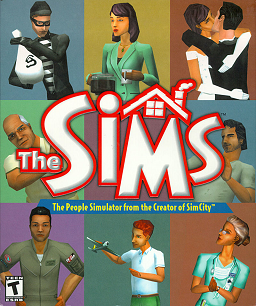

La casa de muñecas virtual que casi nadie creia que iba a vender
02

THE SIMS
CONSOLAPC · Mac · PlayStation 2 · Xbox · GameCube
AÑO2000
DESARROLLADORMaxis (publica Electronic Arts)
GENEROSimulador de vida
NO ESTA EN LA COLECCION
03
CONTEXTO DE EPOCA
Llegamos a 2000
Will Wright penso el juego como una casa de muñecas virtual despues de perder su propia casa en el incendio de Oakland de 1991. En Maxis casi nadie creia en un juego sin objetivo, pero EA, que compro Maxis en 1997, aposto por el, y salio en febrero del 2000 para convertirse en un fenomeno mundial.
04
COMPARATIVA
PC · MAC · PLAYSTATION 2 · XBOX · GAMECUBE · 2000
TARROVISIONCH 01
NO SIGNAL
Inserta gameplay aqui
VS
TARROVISIONCH 02
NO SIGNAL
Inserta gameplay aqui
05
JUGABILIDAD HOY
PC · MAC · PLAYSTATION 2 · XBOX · GAMECUBE · 2000 · GAMEPLAY
TARROVISIONCH 03
NO SIGNAL
Inserta gameplay aqui
EL DATODiriges a una familia sin meta fija: cuidas sus necesidades (hambre, baño, energia, diversion, vida social), subes habilidades, buscas trabajo y armas la casa con el modo construir y comprar. Cada familia parte con 20.000 simoleones.
06
GRAFICOS Y SONIDO HOY
PC · MAC · PLAYSTATION 2 · XBOX · GAMECUBE · 2000 · GAMEPLAY
TARROVISIONCH 04
NO SIGNAL
Inserta gameplay aqui
EL DATOSims en 3D sobre casas dibujadas en 2D, un idioma inventado llamado Simlish y una banda sonora de jazz y new age de Jerry Martin y Marc Russo. El resultado es calido, divertido y facil de amar.
07
VEREDICTO RETROTARROS
IMPRESCINDIBLE
Hay que jugarlo por haber inventado el simulador de vida casual: cuidar a tu familia, armar la casa y contar tus propias historias. Fue el juego de PC mas vendido de su epoca y su encanto sigue intacto.
08
RETROTARROS
SUSCRIBETE
Activa la campana para no perderte la proxima reseña. ¿Que juego quieres que revisemos? Comenta abajo.